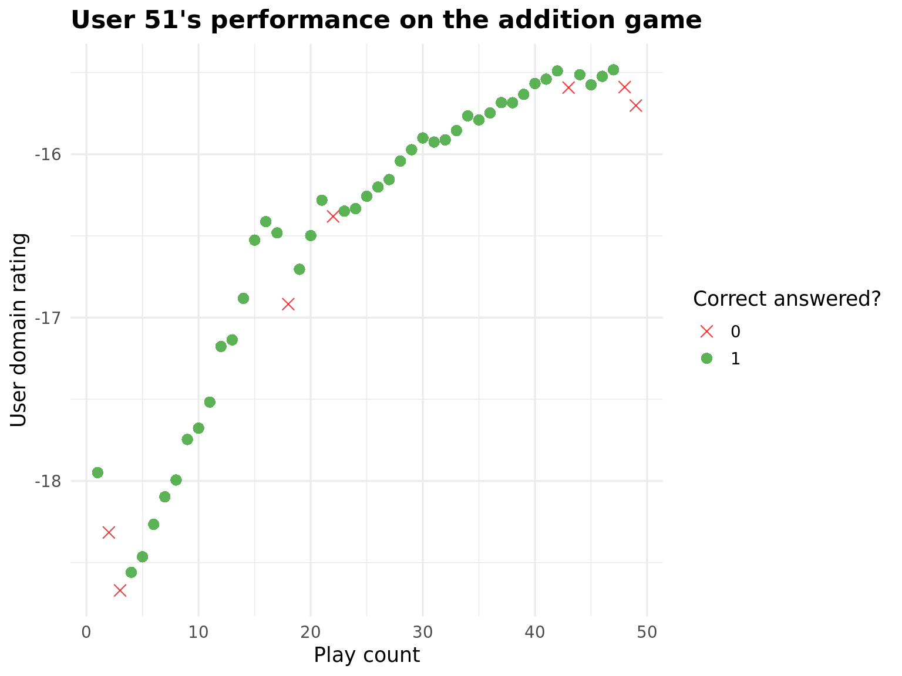

# Set up environment
knitr::opts_chunk$set(echo = TRUE, message = FALSE, warning = FALSE)
rm(list = ls())ggplotly - Example with Oefenweb Data
This handout provides an example of creating an interactive visualization with ggplotly() using data from the Oefenweb learning platform. We first set up the environment.
# Load libraries
library(tidyverse)
library(oefenwebDatabase)
library(plotly)
# connect to the Oefenweb server
con <- oefenwebDatabase::connect()Let’s get started by querying the play data of a single player, specifically the user with user_id = '51', for the addition game.
# get data of specific user
data <- get_query(
"SELECT *
FROM log_records_1
WHERE new_user_id = '51'",
con = con
)We are now going to make a regular ggplot object that depicts how the player’s ability rating in the addition game develops over time. Additionally, we are plotting for each given response whether that was a correct or an incorrect response to the item’s question.
# set custom aesthetics
# plot theme
plot_theme <- theme_minimal(base_size = 13) +
theme(
plot.title = element_text(
face = "bold",
size = 16
)
)
# specify colors (for plotting incorrect vs. correct answers)
plot_colors <- c("#E31A1C", "#33A02C")
# plot rating development over played items
data %>%
ggplot(
aes(
x = new_user_domain_modified_count,
y = new_user_domain_rating,
colour = factor(correct_answered),
text = paste0(
"difficulty: ", difficulty,
"\nreaction time: ", round(response_in_milliseconds / 1000, 1), " sec"
)
)
) +
geom_point(
size = 3,
alpha = .8,
aes(shape = factor(correct_answered))
) +
scale_shape_manual(
values = c(4, 16),
name = "Correct answered?"
) +
scale_color_manual(
values = plot_colors,
name = "Correct answered?"
) +
labs(
title = paste0(
"User ", unique(data$new_user_id), "'s performance on the addition game"
),
x = "Play count",
y = "User domain rating"
) +
plot_theme
To convert the static ggplot above, you simply call ggplotly(your_plot), where your_plot is the ggplot object you created. This turns it into an interactive plot with tooltips, zoom, and pan.
Below, we save the ggplot object we created earlier and wrap it in ggplotly(). We also add a customized tooltip, by adding a text aesthetic to the ggplot object. In this example, the customized tooltip depicts additional information for each given response, namely the chosen difficulty level and the player’s reaction time.
# plot rating development over played items
my_plotly <- data %>%
ggplot(
aes(
x = new_user_domain_modified_count,
y = new_user_domain_rating,
colour = factor(correct_answered),
# add text aesthetic for customized plotly tooltip:
text = paste0(
"difficulty: ", difficulty,
"\nreaction time: ", round(response_in_milliseconds / 1000, 1), " sec"
)
)
) +
geom_point(
size = 3,
alpha = .8,
aes(shape = factor(correct_answered))
) +
scale_shape_manual(
values = c(4, 16),
name = "Correct answered?"
) +
scale_color_manual(
values = plot_colors,
name = "Correct answered?"
) +
labs(
title = paste0(
"User ", unique(data$new_user_id), "'s performance on the addition game"
),
x = "Play count",
y = "User domain rating"
) +
plot_theme
# convert ggplot object into a plotly one, with a customized tooltip
ggplotly(my_plotly, tooltip = "text")Note: Once you use tooltip = "text", Plotly only displays the contents specified in the text aesthetic – so be sure to include everything you want to see in the tooltip.
And that’s it! You have now converted the static plot into an interactive plotly object.
oefenwebDatabase::close_connections()[[1]]
[1] TRUE